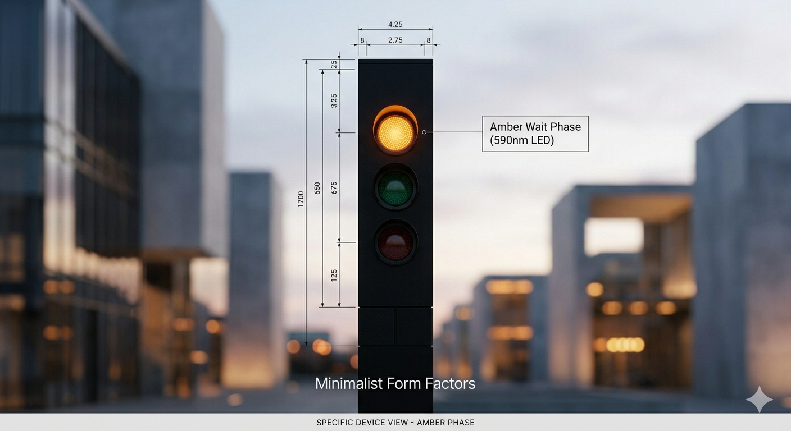
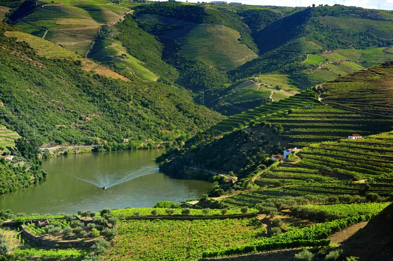

Architecting Data & Visual Intelligence

Una metodología algorítmica para desmitificar la prospección comercial. Este "Semáforo" de datos neutraliza el bias humano, clasificando leads con precisión matemática.
Sincronización total entre el mundo físico y digital. Utilizando cámaras de profundidad y sensores, este sistema redefine el control de stock en tiempo real.

Análisis financiero y ESG para modelos de hostelería de alto nivel. Una herramienta diseñada para asegurar la rentabilidad sin comprometer el entorno ambiental.